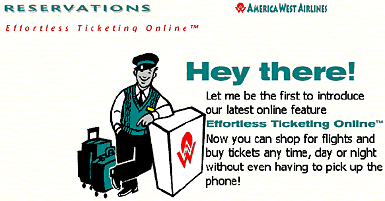
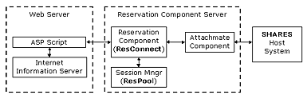

|
| ||
|
| ||
Chris Hartman and Patrick E. Husting
October 10, 1997
Contents
Introduction
The Debut of Effortless Ticketing Online
Reservation Components
Other Site Tools and Technologies
Security Deployment
Future Plans
Appendix A: About the Authors
Appendix B: Tools used for Development and Production
America West  serves over fifty destinations (including Mexico and Canada) with a modern, fuel-efficient fleet of 99 aircraft and a dedicated workforce of 10,000. A scheduled passenger airline, America West is one of the nation's ten major carriers, with annual revenues of more than $2 billion.
serves over fifty destinations (including Mexico and Canada) with a modern, fuel-efficient fleet of 99 aircraft and a dedicated workforce of 10,000. A scheduled passenger airline, America West is one of the nation's ten major carriers, with annual revenues of more than $2 billion.
America West spends more than $60 million annually for participation in automated computer reservation systems, most of which are owned by its competitors. Historically, the cost to participate has continued to increase, while other technologies tended to decrease in cost. This rate of increase is greater than the company's growth and increase in revenues.
Throughout the past year, America West has continued to explore new products, processes, and relationships to improve all of America West's travel services. For example, its Web-based reservation system enables travelers to efficiently plan and book itineraries based on convenience, price, vendor preferences, schedules, and other selection criteria. America West's ultimate goal in building a Web site is to take advantage of the economies of Internet connectivity and offset call volume by providing information about the company, its products, and its services.
The Southwest district of Microsoft Consulting Services (MCS)  assisted America West in building Effortless Ticketing Online, its Web-based reservation system. MCS is focused on helping companies using Microsoft products to implement leading-edge technology delivered by Microsoft to the market. As a consulting group, MCS' goal is to help customers make the best decisions surrounding the development and implementation of Microsoft products and any technologies that affect the customer's business. The consultants accomplish this by working closely with organizations to understand their business needs and help map the technology to meet those needs.
assisted America West in building Effortless Ticketing Online, its Web-based reservation system. MCS is focused on helping companies using Microsoft products to implement leading-edge technology delivered by Microsoft to the market. As a consulting group, MCS' goal is to help customers make the best decisions surrounding the development and implementation of Microsoft products and any technologies that affect the customer's business. The consultants accomplish this by working closely with organizations to understand their business needs and help map the technology to meet those needs.

The heart of America West's Web site is the Effortless Ticketing Online reservation component. The Effortless Ticketing Online reservation component operates in the context of a session on the reservation system. Session is defined here as the reservation component's connection to the mainframe. Through this session, screen-scraping data from the mainframe can be sent and received. The client application begins a reservation session by instantiating the reservation component's Session object. Creating this object is analogous to opening and logging on to a new terminal session on the reservation system.
ResPool (or Session Manager) is used to provide a new terminal session to ResConnect when requested. Because we screen-scrape our terminal sessions through one instance of an Attachmate component, we needed to create a component that would manage the 50 terminal sessions at our disposal. ResPool will provide the next available session to the ResConnect component. If all 50 terminal sessions are unavailable, ResPool will manage the pool of requests until a session frees up, providing a first-come-first-served approach.
The Session object is the root object of the reservation component's object model specification. Therefore, all other objects (and all other reservation functions) are contained within the Session object. The client application can access these child objects only after successfully creating the Session object.
All of the reservation components can run on the same machine as the Web Server or on a different machine (that is, the reservation component server as shown in Figure 1). This flexibility (or scalability) is a natural characteristic of ActiveX™ components. As more power is required for the reservation system, these components can be scaled or distributed (as necessary) from one machine to several machines without rebuilding any of the existing components.
By using the Attachmate component, we leveraged months of development time and testing; it provided easy bi-directional PC-to-host connectivity as well as an administration tool for creating sessions and viewing session activity in real time.
The reservation component (or "ResConnect" for short) is an ActiveX component that runs on the server to provide a communications gateway to the SHARES reservation system. Using object programming methodologies, the reservation component supplies an easy-to-use programming interface for a client application (that is, the Active Server Pages script) to the reservation system.
The reservation component's goals include:
The reservation component is actually made up of two separate components: ResConnect, the main reservation interface to SHARES, and ResPool, the session manager. Additionally, a third component in the system architecture provides host connectivity to the host system, an off-the-shelf component by Attachmate called Extra Airline. Figure 1 illustrates the relationships among these components and the rest of the Internet reservation system:

Figure 1. The Overall Architecture of America West's Internet Reservation System
America West is pleased with the instant popularity of Effortless Ticketing Online and the performance of the reservation system. The site has taken almost $1 million in bookings in less than three months with very little promotion, while the number of visitors to the existing site instantly doubled when Effortless Ticketing Online was released. America West is in the process of creating a marketing plan that will drive more traffic and bookings to the site. The company estimates a savings of $10 to $20 per booking when compared to current traditional distribution channels such as travel agents and phone center bookings.
Web site tool selection was based on several criteria:
America West already had developers experienced in Visual Basic® for Applications (VBA), so Visual Basic 5.0 and Active Server Pages were a natural fit. The programmers were surprised by how easy it was to develop an ASP application in a short time frame. Selecting Visual Basic 5.0 and ASP also conformed to internal standards for development languages, and fit in well with their desktop application standard of Microsoft Office 97, which contains VBA.
Visual Basic was also chosen for its ability to componentize the reservation system logic in a RAD fashion. This allowed the creation of a reservation object that can be used in any application that supports ActiveX. The reusability is a great step forward for America West: one interface to the reservation system that all applications can use.
Visual InterDev™, by providing all the necessary tools in an integrated environment, enabled focus on the development of ASP and HTML. The developers no longer had to jump from program to program while developing an Internet application. The best-liked feature was its integration with SQL Server, and the ability to do schema changes on the fly in a true RAD environment.
Internet Information Server was chosen for its easy setup, administration, scalability, security, and integration with Windows NT®. IIS has been a true workhorse since the Web site launched. By optimizing around the Windows NT Server platform, Internet Information Server delivered high performance, excellent security, ease of management and is up and running in minutes. It serves as the best platform for both integrating with existing solutions and delivering a new generation of Web applications.
SQL Server was chosen due to its ability to put up a very scalable database, without the headaches of administration or the expense of a dedicated database administrator (the Webmaster and developers share maintenance responsibilities). SQL Server's built-in Internet integration gave America West the ability to build an Active Web site and conduct business on the Internet using open, high-performance solutions.
A late addition to the Web site was Microsoft Transaction Server. America West plans to deploy Transaction Server to scale to several thousand transactions during the critical lunchtime crowd to the Web site. Transactions are automatically built into applications, providing mission-critical reliability for the distributed applications.
Security was a major concern in two areas: credit-card information and the reservation system.
From the very start of the project, customer credit-card information was a top security concern. With negative press about hackers stealing credit-card numbers, America West was deeply concerned about credit-card number theft. To reduce this risk, the developers implemented the following steps to eliminate credit card theft:
The other area of concern of security breach was the reservation system. We needed to lock down the communications line between the reservation component server and reservation system. To accomplish this, we:
America West's greatest challenge is the connection to the reservation system and consumer browser incompatibilities. The connection to the reservation system can sometimes be challenging because there are many factors that affect the system. It could be router problems, which at times can be difficult to diagnose. There could be UDP problems because UDP is a stateless protocol, which means a packet is sent but no acknowledgment is sent back.
America West plans to add more functionality and improve existing functionality through additional development from Microsoft Consulting Services, in conjunction with internal resources. For example, it will be installing Microsoft Transaction Server to handle peak times more efficiently. Microsoft Transaction Server provides the glue needed to hold all the diverse components, systems, and servers together in one powerful Web site reservation system.
Chris Hartman, America West Airlines
Chris is an analyst in the Market Automation/Product Distribution area within the Revenue Management organization, which reports to the Finance division at America West Airlines. Their primary role is to maximize distribution opportunities and control costs related to 5 domestic computer reservation systems. Additionally, they seek alternative, lower cost distribution opportunities through non-CRS channels such as the consumer direct-booking application on the AWA Web site. Chris' interests are raising his 12-year-old daughter, four dogs, four cats, and a hamster; as well as camping, backpacking, hiking, and the Internet.
Patrick E. Husting, Microsoft Consulting Services
Patrick is a Senior Consultant, specializing in Internet/intranet and client-server application development and technologies.
Did you find this material useful? Gripes? Compliments? Suggestions for other articles? Write us!
© 1999 Microsoft Corporation. All rights reserved. Terms of use.